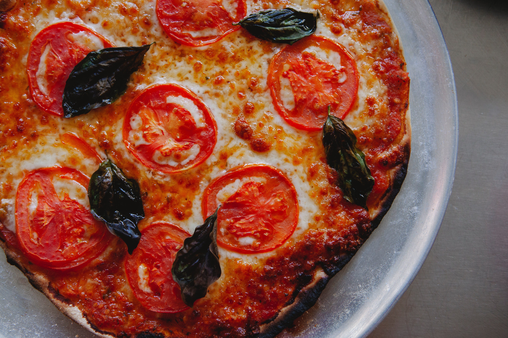

Pizza
Ingredientes
1 premezcla para pizza Maizena
360 ml de agua tibia
50 gramos levadura fresca
3 cucharadas de aceite
500 gr de mozzarella fresca libre de gluten
1 tomate cortado en rodajas
1 taza de salsa para pizza libre de gluten
albahaca fresca
Paso a Paso
Encender el horno en mínimo y precalentar 15 minutos
Colocar el contenido del paquete en un bol. Agregar la levadura, 3 cucharadas de aceite y 360 ml de aagua tibia. Homogeneizar con una cuchara.
Luego, trabajar la masa hasta obtener una masa lisa semisólida.
Dividir la preparación en dos parte iguales, y colocarlas en pizzeras previamente enmantecadas y/o aceitada. Estirar la masa con las manos mojadas con agua. Dejar leudar en un ambiente tibio por unos 40/50 minutos.
Pner la salsa antes de cocinar. Hornear a fuego moderado (180°) durante 15 minutos.
Retirar del horno y ponerle la mozzarekka, el tomate y la albahaca. Llevar nuevamente al horno hasta que todo se gratine.